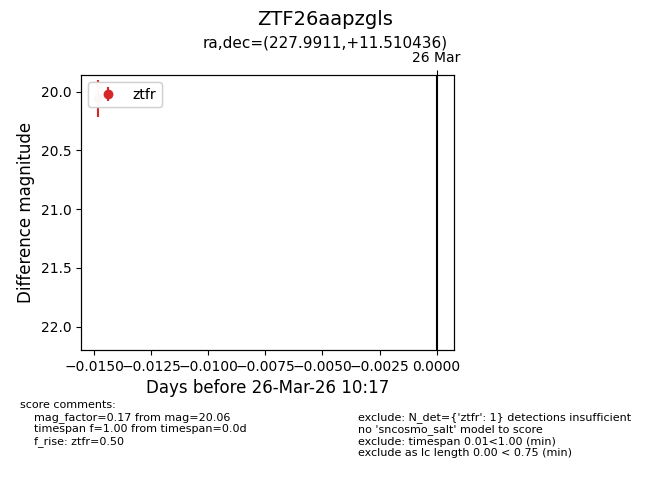
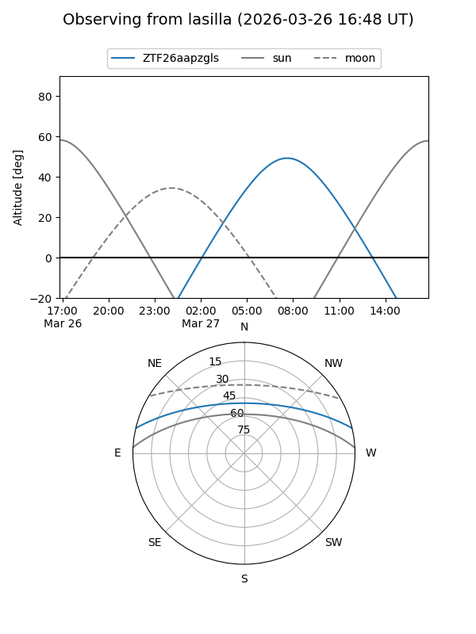
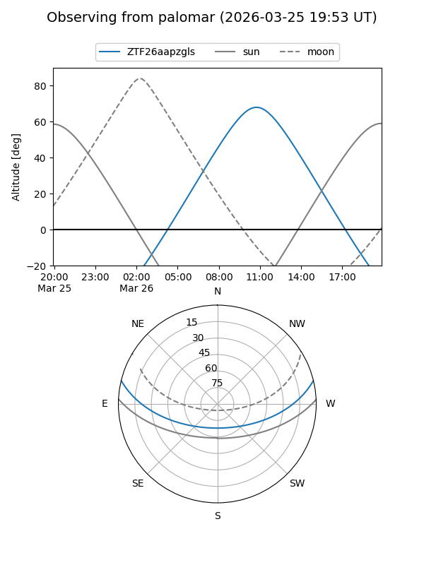

ZTF26aapzgls
Target ZTF26aapzgls at 2026-03-26 10:19
Aliases and brokers:
FINK: link
Lasair: link
ALeRCE: link
alt names
ZTF26aapzgls (ztf,fink_ztf)
Coordinates:
equatorial (ra, dec) = 227.9911,+11.51044
equatorial (HMS+DMS) = 15:11:57.86,+11:30:37.57
galactic (l, b) = (14.5095,+53.53428)
Flags:
Photometry:
last ztfr=20.06
1 ztfr detections
Lightcurve

Visibility


Additional plots